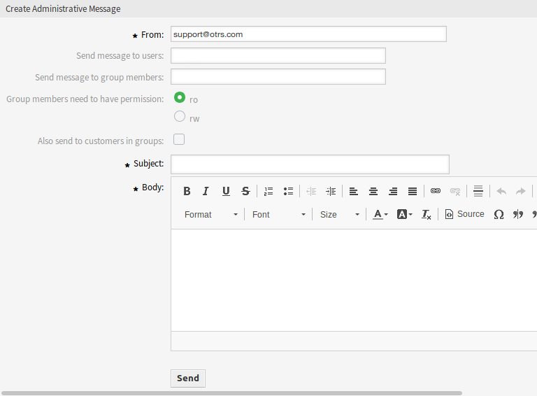

管理员通知¶
公司可能需要向所有人发布一般性公告，或向几组服务人员或个人发布新闻。 此外，OTRS管理员可能需要与特定服务人员联系以了解事件。
OTRS提供管理工具 管理员通知，准确及时地向广大用户发送公告和新闻，直达目标群体，简单有效。 管理员可以使用强大的文本编辑器增强内容，根据特定的收件人列表或OTRS内的一组用户发送通知。
使用此屏幕可将管理消息发送给特定服务人员、组或角色成员。 消息撰写屏幕位于 通信和通知 组的 管理员通知 模块中。

创建管理消息屏幕
管理消息设置¶
撰写管理消息时，可以使用以下设置。 标有星号的字段是必填字段。
- 发件人 *
- 此电子邮件地址将添加到邮件的 发件人 字段中。
- 发送消息给用户
- 可以在此字段中选择一个或多个 服务人员，将向其发送消息。
- 发送消息到组成员
- 可以在此字段中选择一个或多个 组，将向其成员发送消息。
- 组成员需要权限
- 如果组成员需要只读或读写权限来接收消息，则可以选择这些单选按钮。
- 同样发送到该组的客户
选择此复选框还会发送到该组的客户。
注解
只有在启动了设置 CustomerGroupSupport 时才能使用这个选项。
- 主题 *
- 消息的主题。
- 正文 *
- 消息的正文内容。